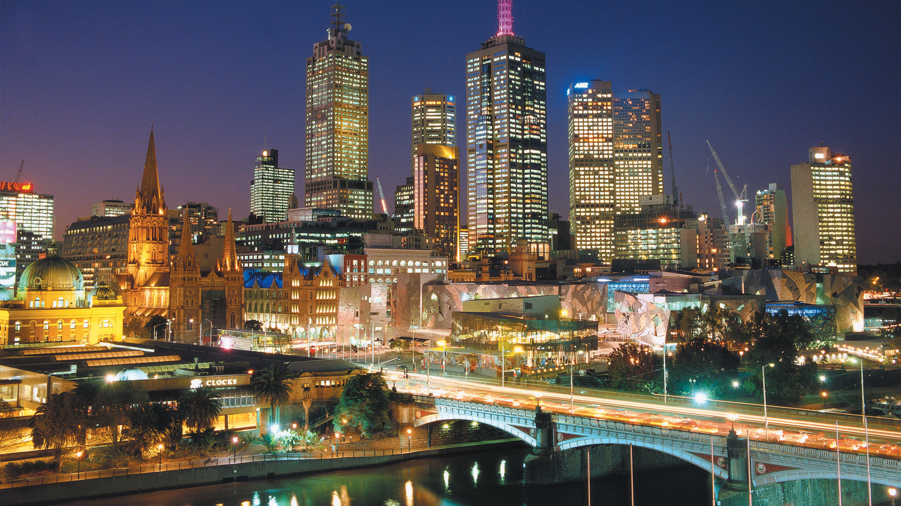

The City of Melbourne respectfully acknowledges that it is located on the traditional land of the Kulin Nation. This special place is now known by its European name of Melbourne.
Today, Melbourne is one of the great multicultural cities of the world and is a significant meeting place. For the Wurundjeri, Boonerwrung, Taungurong, Djajawurrung and the Wathaurung which make up the Kulin Nation, Melbourne has always been an important meeting place and location for events of social, educational, sporting and cultural significance.